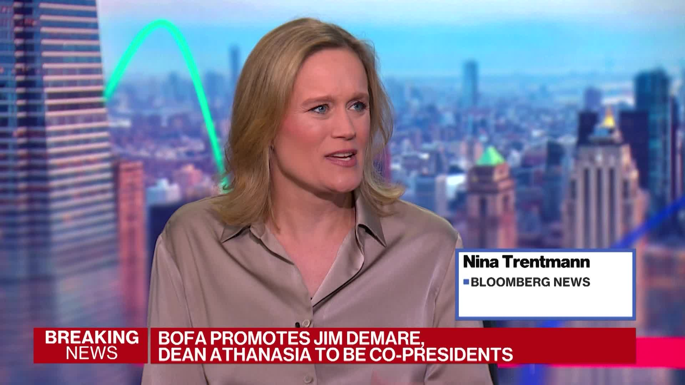
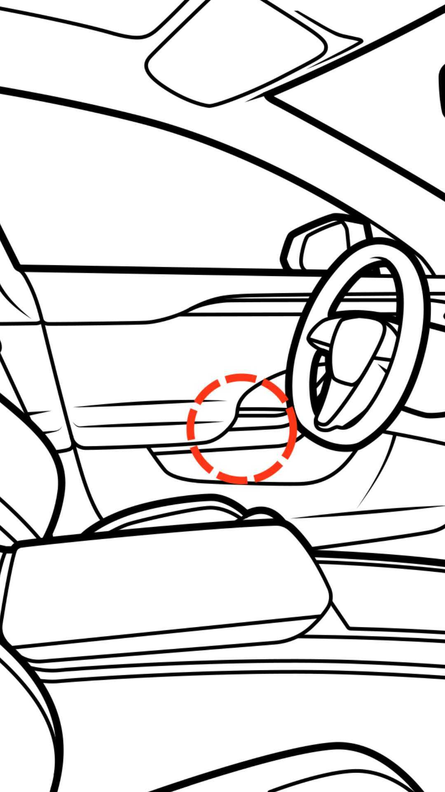

Waneye Financial Overview
Last updated: 2025-09-13 16:22 UTC
Financial Analysis Report
September 13, 2025 at 16:20Executive Summary
Key Highlights
- Media M&A frenzy brewing with Paramount-Skydance bid for Warner Bros. Discovery potentially sparking sector consolidation
- Fed independence concerns emerge as major tail risk per Vaneer Bhansali analysis
- Technology sector showing mixed signals with strong AI/data center demand but emerging energy constraints for data centers
- Cryptocurrency rally continues with Dogecoin massively outpacing Bitcoin and Ethereum gains
- U.S. productivity slowdown while unit labor costs accelerate, creating inflationary pressures
- Emerging market inflows delayed to 2026 according to BofA analysis
- Rare earth supply chain diversification as Brazil challenges China's dominance
- Multiple corporate earnings misses (Wingstop, Hibbett, Anheuser-Busch) indicating consumer spending pressure
Market Sentiment
Market Insights
Sector Analysis
Technology
Strong AI/data center demand driving growth (Vertiv cooling systems, Nvidia/Super Micro collaboration) but facing energy constraints and potential grid issues
Sector leaders with energy-efficient solutions will outperform; regulatory scrutiny on energy consumption likelyMedia & Entertainment
Major consolidation underway with Paramount-Skydance bid for Warner Bros. Discovery potentially triggering broader M&A activity
Content scale becoming critical; streaming profitability pressures driving consolidation; regulatory approval risksEnergy/Commodities
Rare earth supply chain diversification with Brazil challenging China's dominance; uranium production increasing (Kazatomprom +17%)
Geopolitical supply chain security driving investment; energy transition metals becoming strategic assetsFinancial Services
Mixed signals with Barclays reporting 18% profit rise but B. Riley disclosing reporting weaknesses during auditor transition
Sector differentiation increasing; compliance and reporting transparency becoming critical valuation factorsConsumer Discretionary
Multiple earnings misses (Wingstop -12%, Hibbett sales miss) indicating consumer spending pressure despite low unemployment
Value-oriented retailers may outperform; premium discretionary spending showing vulnerabilityKey Market Themes
- Federal Reserve independence concerns as major systemic risk
- Energy infrastructure constraints for technology growth
- Supply chain diversification and rare earth competition
- Media consolidation driven by streaming economics
- Cryptocurrency resurgence with regulatory developments
- Labor market showing mixed signals with productivity concerns
- Geopolitical tensions affecting market sentiment (nuclear doctrine updates)
- Corporate governance and reporting transparency issues
Risk Assessment
Fed Independence Erosion
Mitigation: Diversify across geographic regions; increase allocation to inflation-resistant assets; monitor central bank governance developmentsEnergy Infrastructure Constraints
Mitigation: Focus on energy-efficient tech companies; invest in grid infrastructure and renewable energy solutions; avoid data-center-heavy stocks without power redundancyGeopolitical Tensions Escalation
Mitigation: Maintain defensive positioning; increase gold allocation; focus on domestic-focused companies less exposed to international conflictsConsumer Spending Slowdown
Mitigation: Shift to value-oriented consumer staples; avoid luxury discretionary names; focus on companies with pricing powerCryptocurrency Volatility
Mitigation: Limit crypto exposure to risk-adjusted portfolio allocation; focus on blockchain infrastructure rather than speculative tokensStrategic Recommendations
Investment Opportunities
Overweight data center infrastructure and cooling technology companies
medium-termStrong demand from AI growth with Vertiv and similar companies benefiting from data center expansion
Position in rare earth and critical minerals supply chain
long-termBrazil's challenge to China's dominance creates opportunities in diversified supply chains and mining companies
Selective media consolidation plays
short-termParamount-Warner deal could trigger broader M&A activity in undervalued content companies
Energy infrastructure and grid modernization
long-termData center energy demands creating investment opportunities in grid modernization and power solutions
Defensive Strategies
Increase gold allocation as hedge against geopolitical risks
short-termNuclear doctrine updates and geopolitical tensions support gold as safe haven asset
Reduce exposure to consumer discretionary vulnerable to spending slowdown
immediateMultiple earnings misses indicating consumer pressure; shift to staples and value retailers
Maintain liquidity for potential market volatility
short-termHigh bull sentiment per BofA warning often precedes corrections; Fed uncertainty adds to volatility risk
Focus on companies with strong balance sheets and pricing power
medium-termInflationary pressures and potential economic uncertainty favor companies with strong fundamentals
Market Outlook
Short-term Outlook (1-3 months)
1-3 month outlook: Cautious with upward bias. Technology and AI themes continue driving performance, but Fed policy uncertainty and geopolitical risks may create volatility. Media M&A activity could provide sector-specific opportunities. Consumer spending concerns may pressure discretionary names.
Long-term Outlook (6-12 months)
6-12 month outlook: Constructive but selective. Energy infrastructure, AI/data center growth, and supply chain diversification themes should outperform. Fed policy normalization and geopolitical resolution could provide tailwinds. Structural shifts in media and technology continue to create opportunities.
Key Market Catalysts
- Federal Reserve policy decisions and independence developments
- Paramount-Warner Bros. Discovery deal outcome and broader media M&A
- Geopolitical developments including nuclear doctrine implications
- Q3 earnings season and consumer spending trends
- Cryptocurrency regulatory developments and institutional adoption
- Energy infrastructure and grid capacity solutions
- Rare earth supply chain diversification progress
Monitor Closely
- Fed policy statements and independence developments
- VIX levels for volatility signals
- Technology sector energy consumption metrics
- Consumer confidence and spending data
- Geopolitical risk indicators
- Corporate earnings guidance revisions
- Cryptocurrency institutional flows
- Energy grid capacity and infrastructure investment






US Federal Reserve - Economy at a Glance
Policy Rates
- Federal Reserve: Rate not found
- European Central Bank: Rate not found
- Bank of England: Could not fetch rate (Request Error)
- Bank of Japan: Could not fetch rate (Request Error)
- Swiss National Bank: Could not fetch rate (Request Error)
- Bank of Canada: Rate not found
- Reserve Bank of Australia: 3.60%
- People's Bank of China: Rate not found
- Reserve Bank of New Zealand: Could not fetch rate (Request Error)
- US Nonfarm Payrolls: +250K (2025-05-20)
- Eurozone CPI: 2.1% YoY (2025-05-19)
| Pair | Bid | Ask |
|---|---|---|
| EUR/USD | 1.085 | 1.0852 |
| USD/JPY | 155.2 | 155.23 |